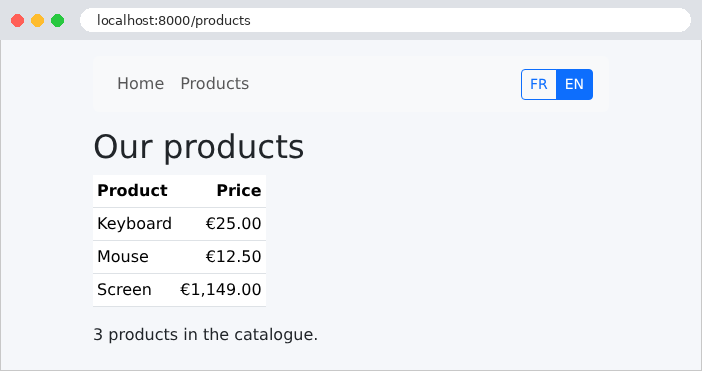
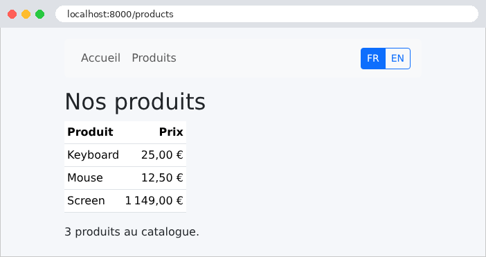

5. Internacionalização
Uma aplicação internacionalizada exibe seus textos no idioma do usuário. O estudo de caso é em francês e inglês. O princípio é simples: os templates contêm textos marcados como “a traduzir” e um dicionário para cada idioma associa cada texto à sua tradução. O idioma selecionado é armazenado em um cookie.
O [Django] usa o [gettext] para isso, o sistema de tradução do projeto GNU, que o [Python] também reconhece (o módulo [gettext] da biblioteca padrão) e que está presente em muitos softwares de código aberto. Com o [gettext], a chave de um texto é o próprio texto, escrito no idioma original: um template escrito com [{% translate "Home" %}], e o dicionário francês associa “Home” a “Accueil”. Uma página continua, assim, legível e funcional mesmo sem dicionário: o texto é exibido no idioma original. Isso difere das versões em [Symfony], [Laravel], [Flask], [Spring MVC], [ASP.NET Core MVC] e [NestJS] do estudo de caso, que usavam chaves abstratas ([MENU.HOME]). Os dicionários são arquivos de texto no formato [.po] (Portable Object), que ferramentas podem extrair do código e que programas de tradução podem editar; o [Django] lê sua versão compilada, os arquivos [.mo] (Machine Object). [gettext] também sabe flexionar um texto no plural conforme as regras de cada idioma. [Django] é ele próprio traduzido dessa maneira: é graças a seus dicionários que ele consegue exibir suas mensagens de erro em francês (desde o exemplo 08, elas estão em inglês, o idioma padrão). A formatação de datas e valores continua a mesma do exemplo 16.
5.1. Exemplo 22: Uma aplicação bilíngue
5.1.1. A configuração: config/settings.py
- Linha 14: o idioma padrão da aplicação, usado para as requisições que não especificam um idioma (exemplo 08). É também o idioma dos textos dos templates; portanto, o inglês não requer dicionário;
- Linhas 15–18: os idiomas aceitos pela aplicação;
- Linha 20: [LOCALE_PATHS], as pastas em que o [Django] procura os dicionários da aplicação, além das pastas [locale] de cada aplicação (inclusive as do próprio [Django] ). Cada dicionário fica em uma pasta [<language>/LC_MESSAGES], com o nome [django.po] (e [django.mo]): essa é a organização exigida pelo [gettext];
- linha 22: o nome do cookie que armazena o idioma selecionado. [django_language] é o valor padrão; nós o incluímos aqui para que fique visível;
- linhas 29–33: o middleware [LocaleMiddleware] do [Django] substitui nosso middleware [SetLanguage] do exemplo 16. Para cada requisição, ele seleciona o idioma dentre os especificados na configuração [LANGUAGES]: o idioma indicado no cookie de idioma, se houver; caso contrário, o idioma preferido do navegador, com base no cabeçalho [Accept-Language] (exemplo 12); caso contrário, [LANGUAGE_CODE]. Ele o ativa ([translation.activate], exemplo 16) e o armazena em [request.LANGUAGE_CODE]. Por fim, adiciona à resposta o cabeçalho [Content-Language] (o idioma da página), junto com o cabeçalho [Vary: Accept-Language], que avisa aos caches que a resposta depende desse cabeçalho;
- linha 43: o processador de contexto [i18n] adiciona aos templates as variáveis [LANGUAGE_CODE] (o idioma da requisição), [LANGUAGES] e [LANGUAGE_BIDI] (verdadeira para um idioma escrito da direita para a esquerda).
5.1.2. O dicionário: locale/fr/LC_MESSAGES/django.po
Um arquivo [.po] é uma sequência de entradas, separadas por linhas em branco:
- linhas 1–4: um comentário;
- linhas 5–11: a entrada de cabeçalho: uma string vazia ([msgid ""]), cuja “tradução” ([msgstr]) contém as informações do dicionário: o idioma, o conjunto de caracteres e a regra de plural do idioma ([Plural-Forms]: em francês, duas formas, a segunda para qualquer número maior que 1);
- linhas 13–15: uma entrada padrão: [msgid] é o texto de origem, como escrito no template; [msgstr] é sua tradução. A linha [#:] indica onde o texto foi encontrado (um template e uma linha): é um comentário para o tradutor;
- linhas 25–28: um texto que contém uma variável. No dicionário, uma variável é escrita como [%(name)s] (a sintaxe das strings de formato do [Python], exemplo 10); a linha [#, python-format] sinaliza isso para as ferramentas. A tradução pode reposicionar a variável ou alterar a pontuação ao redor dela (em francês, o ponto de exclamação é precedido por um espaço);
- linhas 47–52: uma forma plural: [msgid] é a forma singular, [msgid_plural] é a forma plural, e cada forma da tradução é numerada ([msgstr[0]], [msgstr[1]]), na ordem especificada pela regra [Plural-Forms]. Em francês, 0 e 1 são singular, ao passo que em inglês 0 é plural (“0 products”): o [gettext] sabe disso graças a essa regra. É um avanço em relação ao “product(s)” usado nas versões anteriores do estudo de caso.
Esse arquivo não é escrito à mão. O comando:
examina os templates do projeto e o código [Python], extrai todos os textos marcados como “a traduzir” e cria ou atualiza o arquivo [locale/fr/LC_MESSAGES/django.po]: os textos novos são adicionados a ele com uma tradução vazia, e as traduções existentes são preservadas. Resta apenas escrever as traduções, em um editor de texto ou em um software especializado ([Poedit], por exemplo). O comando:
compila então cada arquivo [.po] em um arquivo [.mo] — um arquivo binário de leitura rápida — que é o utilizado pelo [Django]. É preciso reiniciar o servidor após uma compilação: os dicionários são carregados uma única vez. Esses dois comandos usam os programas do [gettext] ([xgettext], [msgfmt]...), que precisam estar instalados (no [Linux], o pacote [gettext]; no [Windows], por exemplo, os binários distribuídos no site mlocati.github.io). Como o arquivo [django.mo] é fornecido com o exemplo, não é necessário instalar esses pacotes para executá-lo.
5.1.3. Seleção do idioma: rotas e views
- Linha 12: [re_path] descreve uma rota por meio de uma expressão regular, em vez da sintaxe de [path] (exemplo 02). [^] e [$] marcam o início e o fim do caminho; [(?P<code>fr|en)] é um grupo nomeado: o texto que ele reconhece — [fr] ou [en] (a barra vertical significa “ou”) — é passado à view no parâmetro [code]. Outro idioma não corresponde a nenhuma rota: [/language/de] retorna um erro 404.
- Linhas 14–25: as views da página inicial e de produtos não conhecem o idioma; elas fornecem dados brutos (um nome, uma data, valores em centavos). A tradução e a formatação ficam a cargo dos templates. A classe [Product] tem um nome e um preço em centavos; a biblioteca [formats] é a do exemplo 16: seu filtro [long_date] escreve uma data no formato “completo” do idioma ativo (“Wednesday, September 23, 2026”, “mercredi 23 septembre 2026”), e seu filtro [money] exibe um valor monetário.
- linhas 30–37: a view de troca de idioma responde redirecionando o usuário de volta à página de onde veio; o usuário retorna à sua página de origem no novo idioma;
- linhas 35–36: a resposta inclui um cookie, que o navegador reenviará a cada requisição. [set_cookie] recebe seu nome, valor e opções: [max_age], sua duração de vida em segundos (um ano); [httponly=True] o torna invisível para o [JavaScript] da página; [samesite="Lax"] impede que o navegador o envie com uma requisição POST originada em outro site. Ele é adicionado à resposta como um cabeçalho [Set-Cookie];
- linhas 43–49: a página de origem é indicada pelo cabeçalho [Referer] da requisição (a grafia incorreta, com um único [r], é a do padrão HTTP), que o navegador preenche com a URL da página que continha o link. Mas esse cabeçalho vem do cliente, que pode colocar qualquer coisa nele. Redirecionar às cegas para esse endereço transformaria nossa aplicação em um open redirect: um link malicioso com o nome do nosso domínio poderia enviar o usuário a um site malicioso. A função [url_has_allowed_host_and_scheme] do [Django] ([django.utils.http]) verifica se um endereço é relativo ou se aponta para uma das máquinas permitidas (neste caso, a da requisição: [request.get_host()]); caso contrário, o usuário é redirecionado para a página inicial.
O [Django] também fornece uma view pronta para trocar o idioma, [django.views.i18n.set_language], que executa a mesma tarefa por meio de um formulário (POST); escrevemos a nossa para demonstrá-lo e para permitir a troca de idioma por um simples link.
5.1.4. Tradução nos templates
- linha 4: o atributo [lang] da página indica seu idioma aos navegadores, aos mecanismos de busca e aos leitores de tela; [LANGUAGE_CODE] é o idioma da requisição, fornecido pelo processador de contexto [i18n];
- Linha 9: o título da página é fornecido pela própria página, já traduzido (bloco [title]).
- linha 2: as tags de tradução estão na biblioteca [i18n], que cada template deve carregar (exemplo 16);
- linhas 6–7: a tag [{% translate %}] retorna a tradução de um texto para o idioma da requisição (ou o próprio texto, se não houver tradução);
- linhas 10–17: a tag [{% get_available_languages %}] armazena em uma variável os idiomas da configuração [LANGUAGES] — pares (código, nome) —, que o laço então percorre ([for code, name in languages]). Um botão por idioma, que leva à view [/language/<code>]. O idioma atual é destacado ([btn-primary], botão preenchido).
- linha 4: o bloco [title], traduzido, para o template pai;
- linha 9: a tag [{% blocktranslate %}] traduz textos que contêm variáveis: [{{ name }}] torna-se [%(name)s] no dicionário. Aqui só são permitidas variáveis simples (sem filtros nem pontos);
- linha 11: uma variável calculada só pode, portanto, ser incluída no texto por meio de [with]: a data, formatada no idioma da requisição pelo filtro [long_date], é armazenada na variável [date] no texto.
- linha 15: o filtro [money], cujo resultado depende do idioma;
- linha 21: o plural. [count n=products|length] retorna o número que determina a forma ([length], exemplo 14); a tag [{% plural %}] separa a forma singular da forma plural, escritas no idioma de origem. Os nomes dos produtos, porém, não são traduzidos: são dados que, em uma aplicação real, viriam de um banco de dados.
Fora dos templates, a tradução é feita pelas funções do módulo [django.utils.translation]: [gettext("Home")] (frequentemente importada com o nome curto [_]: [_("Home")]), [ngettext] para o plural e [gettext_lazy], uma tradução “preguiçosa” (lazy), realizada somente quando o texto é usado: é a que se deve usar para textos definidos quando um módulo é carregado (o rótulo de um campo de formulário, por exemplo), quando o idioma da requisição ainda não é conhecido. O estudo de caso a utiliza.
5.1.5. Execução
A página inicial, em inglês (o idioma padrão) e depois em francês, após clicar no botão “FR”:


A página de produtos, nos dois idiomas. Os valores seguem as convenções de cada idioma:


A troca de idioma, vista com o [curl]. A opção [-H] fornece o cabeçalho [Referer] que o navegador enviaria:
O redirecionamento leva de volta à página de origem, e o cookie é configurado para durar um ano. A própria resposta continua em inglês ([Content-Language: en]): o idioma só foi selecionado quando a requisição chegou, antes de o cookie existir. Um [Referer] que aponta para outro site não permite o redirecionamento para lá:
O usuário volta à página inicial e permanece em nosso site. Por fim, a página inicial, solicitada com o cookie [django_language=fr] (opção [-b] do [curl]):
O cookie não é assinado: ele é transmitido em texto simples e o usuário pode modificá-lo. Isso não é um problema: ele não contém nenhuma informação confidencial, e o [LocaleMiddleware] só aceita os idiomas especificados na configuração [LANGUAGES]. O exemplo seguinte ilustra o nível de confiança que se pode depositar em um cookie. Sem cookie, o [LocaleMiddleware] lê o cabeçalho [Accept-Language] do navegador: [curl -H "Accept-Language: fr-FR,fr;q=0.9" http://localhost:8000/] renderiza a página em francês. Os dois mecanismos se combinam, assim, naturalmente: o idioma do navegador na primeira visita e, depois, o idioma escolhido pelo usuário. Uma terceira abordagem, comum, coloca o idioma na URL ([/fr/products]): a função [i18n_patterns] do [Django] prefixa então as rotas com o idioma, e o [LocaleMiddleware] o lê a partir do caminho. Este estudo de caso se concentra no cookie.